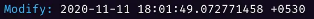

Thomas WILHEM - DAWIN B - 2022/23
Données et utilisateurs
Gun permet de stocker tout type de données comme des tables SQL, des fichiers, des lives et autres. Seulement, tout le monde peut modifier les données stockées dans le Graphe.
C’est pour cela qu’il existe 3 types d’espaces dans Gun :

- Public Space : représente l’espace où tout le monde peut écrire, modifier et supprimer des données
- User Space : représente l’espace où seul l’utilisateur (personne connectée via gun) peut écrire, modifier ou supprimer des données. Ces données peuvent être publiques ou privées
- Frozen Space : représente l’espace où tout le monde peut uniquement ajouter de la donnée
Où sont réellement stockées les données ?
Chaque peer (ici navigateur/personne) initialise une instance de gun.
Avec Gun, ce sont les peers qui stockent les données. Certains peers peuvent avoir aucune, une partie ou toutes les données. Ce que les peers stockent est décidé grâce aux données auxquelles le peer est abonné (celles qu’il a utilisées).
Gun met aussi en place des “relay peer” utilisé pour relier les peers et en même temps servent à stocker des données (toutes s'ils le peuvent). Ces relais utilisent Node – RAD pour stocker des données sur des disques durs. Ils permettent de stocker plus de données que les navigateurs des peers (5 Mb pour le localStorage);
De manière factuelle, les données sont réellement stockées dans le navigateur, et plus précisément dans le localStorage mais aussi via indexedDB.
Voici un exemple de données contenues dans le localStorage de mon ordinateur à un moment donné.
Comment la modification est-elle notifiée aux autres peers ?
Gun utilise les websockets pour cela. Lorsqu’un utilisateur (client) modifie quelque chose dans le graphe, un message est envoyé aux autres clients abonnés à l’élément modifié (et aux relay peers).
Lorsqu’un client reçoit un message, il met automatiquement la donnée à jour.
De cette facon, tous les clients peuvent mettre à jour leurs graphs, même ceux qui ne sont pas connectés à internet (via CAP). C'est pour cela que l'on parle d'Offline-First.
Mais comment sont gérés les conflits ?
En effet, comme tout le monde peut modifier la donnée, il se peut que deux personnes modifient la même donnée en même temps.
Pour palier à ce problème, Gun met en place HAM (Hypothetical Amnesia Machine) qui utilise différents mécanismes en les combinants permettant de savoir comment synchroniser les données :
-
Les Timestamps

Il permettent de donner "l'horaire" à laquelle la donnée a été envoyé. -
Les Vectors Clocks
Permettent de définir l'ordre dans laquelle sont envoyés/modifiées les données. - Un algorithme de résolution de conflit
Sécurité des données
Technologies utilisée : SEA (Security, Encryption & Autorisation) -> sécurisation et chiffrement des données.
Gun fonctionne sur le principe d’utilisateurs. Pour pouvoir échanger des données avec des gens, il faut que la personne possède un compte avec un nom d’utilisateur et un mot de passe.
Lors de la création du compte d’un utilisateur, une paire de clé privé/publique est créée. Lorsque la personne créée son compte/se connecte, son mot de passe est mélangé avec du "salt" (séquence de bits) et hash avec la méthode PBKDF2 (Password Based Key Derivation Function number Two).
Le résultat sert de “proof of work” utilisé pour chiffrer et déchiffrer la clé privée. Cela permet donc de lire et de modifier nos données en utilisant une clé privée sécurisée en tant que “AES encryption key”.
Pour prouver que la personne envoyant des données est bien nous, on peut ajouter notre signature, utilisée pour vérifier notre identité.
Peer2Peer
Technologies utilisées : WebRTC